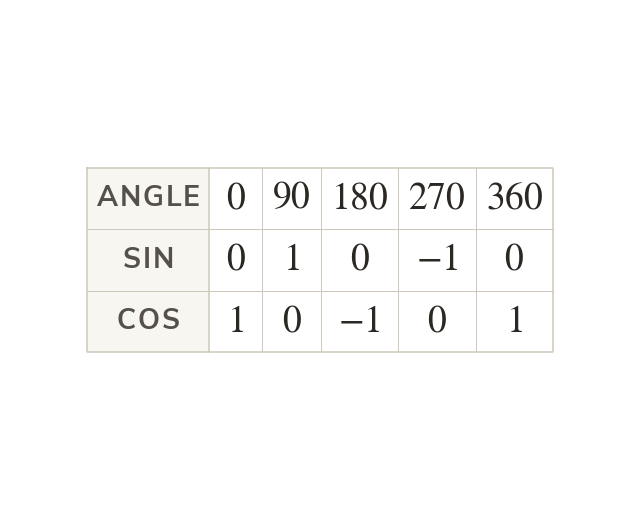
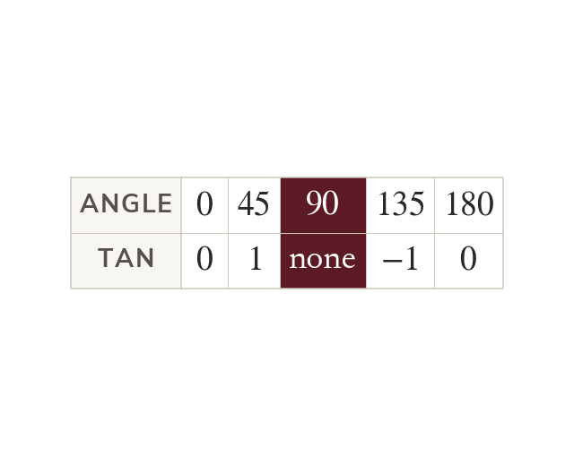
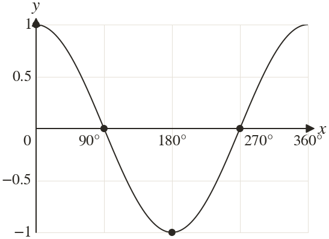
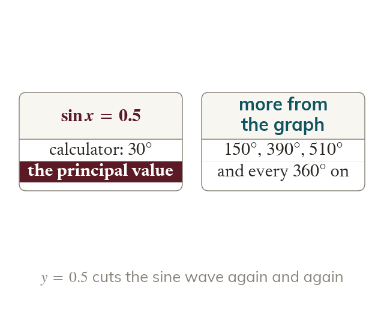
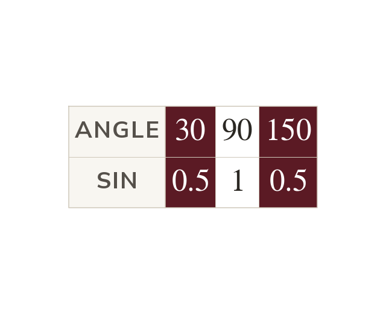

Sine and cosine waves
Sine and cosine repeat every between and
Cosine is the sine wave shifted to the left.
Every sine, cosine or tangent equation has infinitely many answers. The graphs show where they all are, and why a calculator only ever gives one.
Work down the page at your own pace. Write every answer in your book first, then click to check it.
Read each card, then follow the worked examples one step at a time.

Sine and cosine repeat every between and
Cosine is the sine wave shifted to the left.

Tan repeats every not every It has a vertical asymptote wherever cos is zero.

Pick an answer. If it's wrong, the feedback tells you which mistake it was.

Sections The sine and cosine graphs and The tangent graph Neither section has an exercise of its own: their practice comes in Exercise 6E
Read each card, then follow the worked examples one step at a time.

A repeating graph meets a horizontal line infinitely often. A calculator gives just one solution: the principal value.

The graph's symmetry places the other solutions. Sine's peak at mirrors onto
Pick an answer. If it's wrong, the feedback tells you which mistake it was.

Exercise 6E in section Solution of trigonometric equations: the basic equations over to or to Leave the questions that need rearranging for the next lesson.
Finished? Next lesson: 6.10b Solving Trigonometric Equations.
For each skill, tap the one that is true for you today. Your Revise pages start with anything you mark Not yet.
Your ratings are saved on this device only.
Log in, then search for a code to practise that skill.